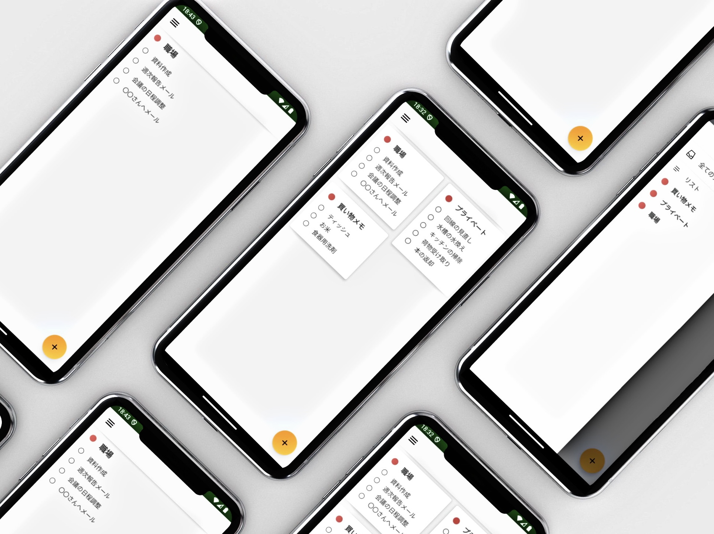
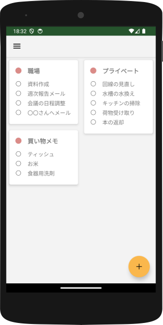
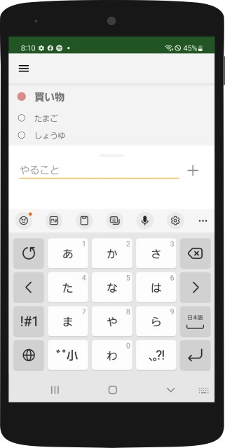
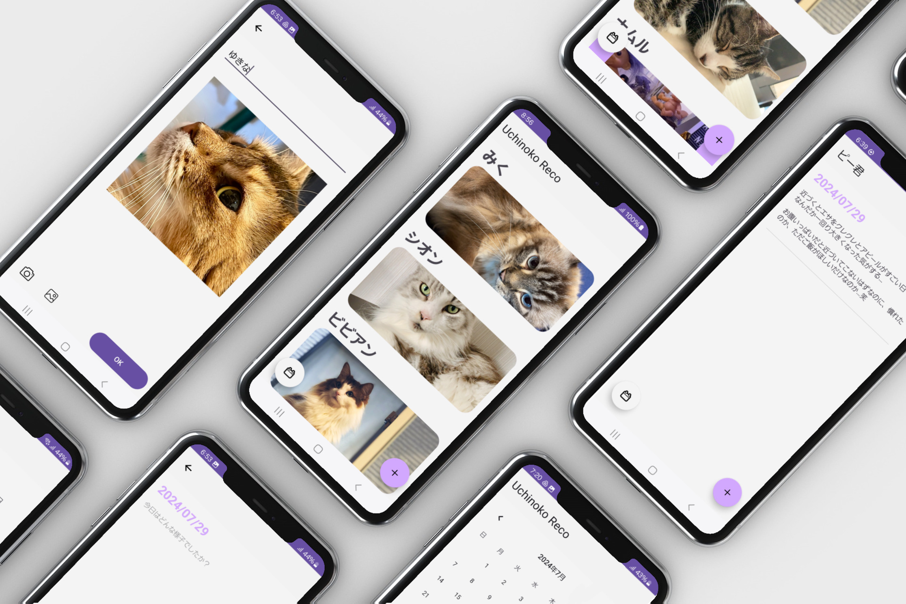
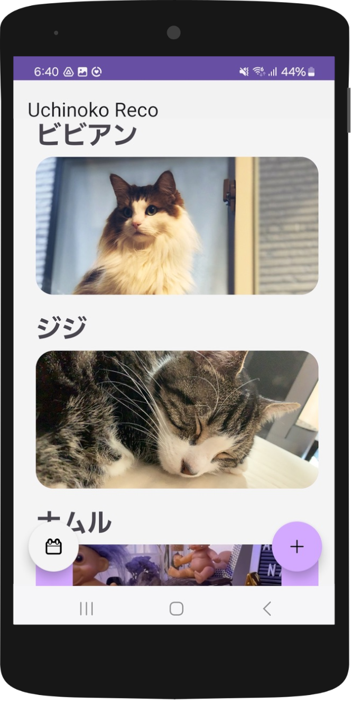
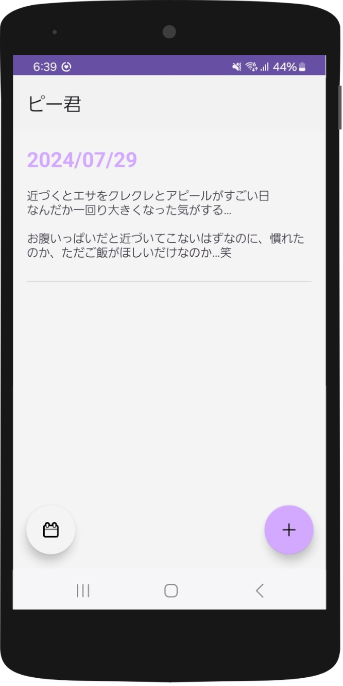

YUZURU IMAI
~01.2017 携帯キャリア代理店勤務
~10.2021 BARに副店長として勤務
~12.2022 webデザインの職業訓練を修了
2023.01~ 株式会社ITPMでヘルプデスクとして勤務
~01.2017 携帯キャリア代理店勤務
~10.2021 BARに副店長として勤務
~12.2022 webデザインの職業訓練を修了
2023.01~ 株式会社ITPMでヘルプデスクとして勤務
2024/01
| 名前 | TodoList |
|---|---|
| 作成期間 | 3ヶ月 |
| Tool | android Studio(Java) |
| github | https://github.com/yzrm/TodoList |
シンプルなタスク管理アプリです。
タスクをカテゴリ別に追加し管理することができます。
複雑な操作を必要とせず見た目もすっきりとしたアプリケーションです。
シンプルで分かりやすいトップビュー
カテゴリごとにタスクの確認ができる
簡単操作でタスクの追加が可能
社内のハッカソンでAndroidアプリケーションを制作いたしました。
社内のハッカソンでTodo管理アプリケーションを課題に制作しました。
数あるTodo管理アプリケーションからシンプルなアプリを参考にしましたが、AndroidStudioで初めてJavaに触れたため、全くの未体験からの制作は覚えることが多かったです。
中でも、参考にしたサイトのコードが昔の記述方法であることが多々あり、気づかずにそのまま参考にしてエラーが発生することがあり理解するのに苦労しました。
ご教示いただき制作を行ったので、自身の知識や経験不足を肌で感じましたが、実際にタスクが追加できるよう実装できた時には感動しました。
今回学んだことは、プログラムの実際の書き方だけではなく、「わからないときの調べ方」についてもとても勉強になりました。
全く触れてこなかった言語の為、どの記述方法が正しいのか調べるだけでもかなりの時間を必要だったため調べる方法を学べたことは今後の制作でも大いに役立つと思います。
また、実際に動くものを制作するのは単に参考書を読むだけの勉強とは違い、得られるものは大きいなと感じました。
アプリケーションを自分自身で制作できたという体験はとても感動したので、また新しいアプリケーションを今度は自分で調べ制作したいなと思います。
2024/08
| 名前 | Uchinoko Reco |
|---|---|
| 作成期間 | 5ヶ月 |
| Tool | android Studio(Java) |
| github | https://github.com/yzrm/UchinokoReco |
ペットごとに管理できる日記アプリケーションです。
好きなペットの画像をサムネイルとして表示させることができます。
お気に入りの一枚をトップページで確認できるそんな日記アプリです。
ペットごとの日記が作れる
お気に入りの一枚でペットを追加
シンプルなビューで記録も簡単
社内のハッカソンでAndroidアプリケーションを制作いたしました。
「どのようなアプリを制作するか」から考え、ワイヤーフレームから作成しました。
社内のハッカソンでペット用日記アプリを制作しました。
アプリ内で画像が使えるアプリを作ってみたかったので、自分の好きなペットたちの記録アプリを作りました。
画像をアプリ内ストレージに保存や、呼び出して表示するなどの部分を実装するのに苦労しました。
今回2回目の参加だったので以前よりはスムーズにコードが書けましたが、まだまだ理解が足りていない部分もあるなと思いました。
アプリ自体の動きやデザインなど、すべて１から考え作成したのですが、
どのように進めたらいいか、といった部分があまり効率よく出来ませんでした。
しっかりとスケジュールやタスクなどを設定すれば、もっと効率よく制作することができたと思うので
今後は何事も計画性を持って取り組もうと思います。